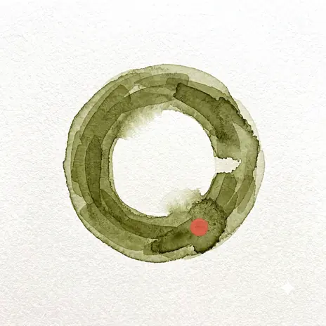

Find us

The address
No booking
London SE1 7RG
Waterloo is four minutes’ walk: out through the Victory Arch, left down Baylis Road, and we are the low green front on the right, between the bookshop and the barber.
Open in a mapThe room
Six stools
One long counter, six stools, and four tables along the window, one of which is the corner table and is free most afternoons.
It is quiet before half eight and after two, the music goes off when the kitchen closes, and nobody will come and ask whether you would like anything else.
The hours
All of them
- Wed–Fri
- 07 – 16
- Sat–Sun
- 08 – 16
- Mon–Tue
- Closed
Bank holidays we are usually shut. If it matters, telephone first.
Say hello
Not a form
41 Lower Marsh · London SE1
Wed–Fri 07–16 · Sat–Sun 08–16